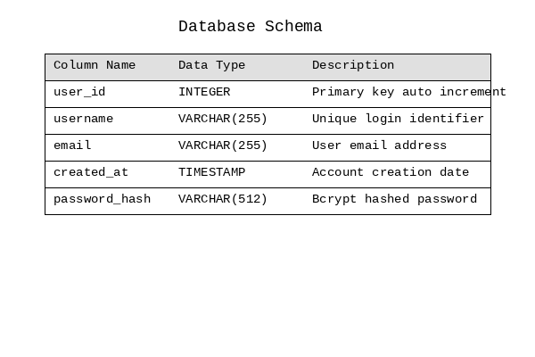

Essential Spring Gardening Tips
Welcome to our comprehensive guide for preparing your garden for the spring season.
Soil Preparation
The foundation of a healthy garden starts with proper soil preparation:
- Test your soil pH: Most vegetables prefer slightly acidic soil (6.0-7.0)
- Add compost: Work 2-3 inches of organic compost into the top 6 inches
- Aerate compacted areas: Use a garden fork to loosen dense soil
- Remove debris: Clear away dead leaves and winter mulch
Visual Reference Guide

Planting Schedule
Timing is crucial for successful spring planting:
- Cool-season crops: Lettuce, spinach, peas - plant 4-6 weeks before last frost
- Warm-season crops: Tomatoes, peppers - wait until soil reaches 60F
- Perennials: Divide and transplant when new growth appears
- Bulbs: Plant summer-flowering bulbs after danger of frost passes
Watering Guidelines
Proper watering establishes strong root systems:
- Water deeply but less frequently to encourage deep root growth
- Morning watering reduces evaporation and fungal diseases
- Use mulch to retain moisture and regulate soil temperature